可能阻塞的套接字调用可分为如下几类:
输入操作: read、readv、recv、recvfrom、recvmsg 5 个函数
输出操作: write、writev、send、sendto、sendmsg 5 个函数
接受外来连接: accept 函数
发出外来连接: connect 函数
标准访问文的方式: 当应用程序调用 read() 接口时，操作系统检查在内核的告诉缓存中有没有需要的数据，如果已经缓存了，那么就直接从缓存中返回。写入的时候，从用户地址空间复制到内核地址空间的缓存中，什么时候写到磁盘由操作系统决定。
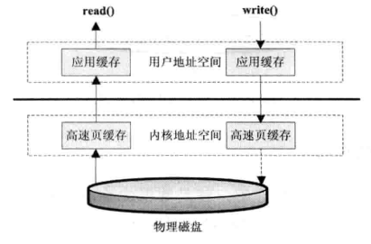
直接 I/O 的方式: 应用程序直接访问磁盘数据，不经过操作系统内核数据缓冲区，减少一次从内核缓冲区到用户数据缓存的数据复制。这种访问文件的方式通常是在对数据的缓存管理由应用程序的数据库管理系统中。
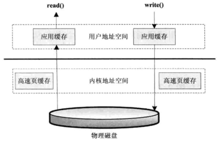
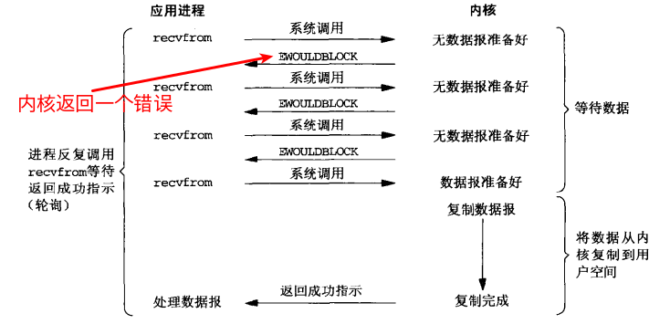
设置非阻塞 I/O:
1 | int val = fcntl(STDOUT_FILENO, F_GETFL, 0); |
select 和 poll)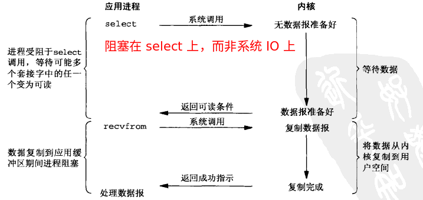
SIGIO)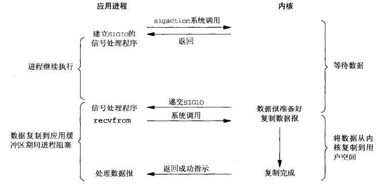
aio_ 系列函数)信号驱动式 I/O 是由内核通知我们何时可以启动一个 I/O 操作，而异步 I/O 模型是由内核通知我们何时完成。
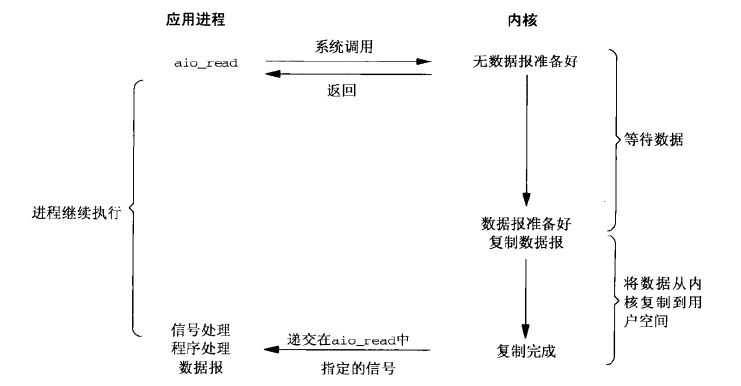
5 种 I/O 模型比较:
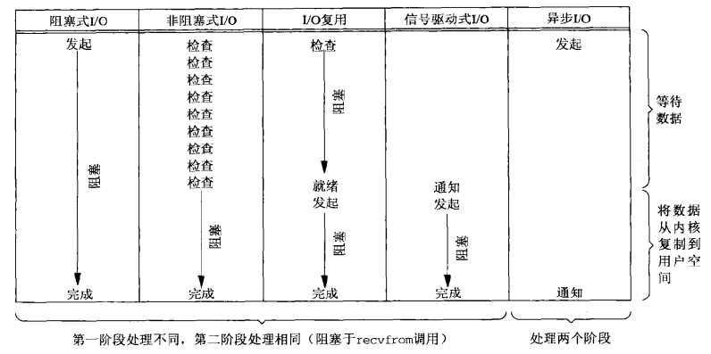
select 指示内核等待多个事件中的任何一个发生，并只在有一个或多个事件发生或经历一段指定的时间后才唤醒它，函数原型:
1 |
|
我们可以在下列情况收到内核通知:
1 | fd_set rset; // 比特位 |
select 最大缺陷就是单个进程所打开的文件描述符是有一定限制的，它由 FD_SETSIZE 设置，默认值是 1024。可以选择修改这个宏然后重新编译内核，不过这会带来网络效率的下降。
pselect 函数:
1 |
|
pselect 是能够处理信号阻塞并提供更高事件分辨率的 select 的增强版本。
poll 函数:
1 |
|
epoll 函数:
socket 描述符不受限制 (仅受限于操作系统的最大文件句柄数 cat /proc/sys/fs/file-max )select/poll 每次都会线性扫描全部的集合mmap 到同一块内存来加速这两者之间的消息传递在 UNIX 系统上大多数 I/O 只需要通过这五个函数完成: open, read, write, lseek, and close。相对于标准 I/O，我们这里讨论的都是 unbuffered I/O (每一次 read 和 write 都会产生一个系统调用)。
通常，UNIX 系统 shell 把文件描述符 0 与进程的标准输入关联，文件描述符 1 与标准输出关联，文件描述符 2 与标准错误关联。
文件描述符的最大限制:
1 | cat /proc/sys/fs/file-max # 599216 |
文件描述符的当前数量:
1 | cat /proc/sys/fs/file-nr |
函数:
1 |
|
调用 dup(fd) 等效于 fcntl(fd, F_DUPFD, 0); fcntl 函数可以:
文件 I/O 围绕文件描述符，标准 I/O 围绕流
一次读或写一个 structure，下述两个函数提供了二进制 I/O:
1 |
|
我们可以这样操作一个结构体:
1 | struct { |
基于字节的 Java I/O 操作接口:

基于字符的 Java I/O 操作接口:
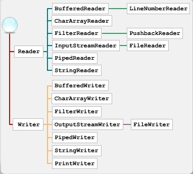
字节与字符的转化接口: InputStreamReader 派生出 FileReader
涵盖了一些 非阻塞 I/O、记录锁、I/O 多路复用 (select 和 poll)、异步 I/O、readv 和 writev、内存映射 I/O (mmap)
readv 和 writev这两个函数可以让我们从多个缓冲区里面读和写，这些操作称之为 scatter read 和 gather write
1 |
|
Memory-Mapped I/O 让我们可以将位于磁盘上的一个文件映射到内存上的一个缓冲区中，当我们从缓冲区中读，我们就是从文件中读；当我们向缓冲区写，对象的文件也被写入了。Memory-Mapped I/O 已经被用于 virtual memory systems 很多年了。
1 |
|
内存映射文件:
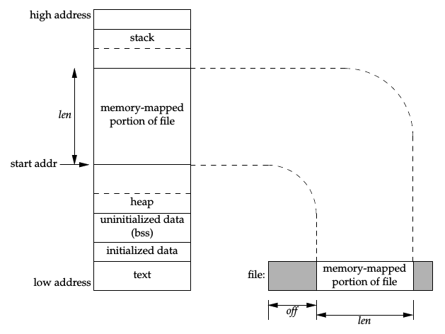
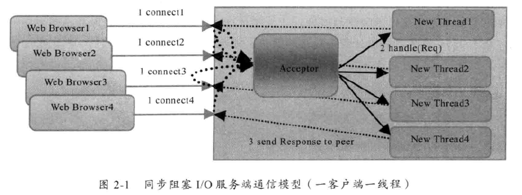
1 | ServerSocket server = null; |
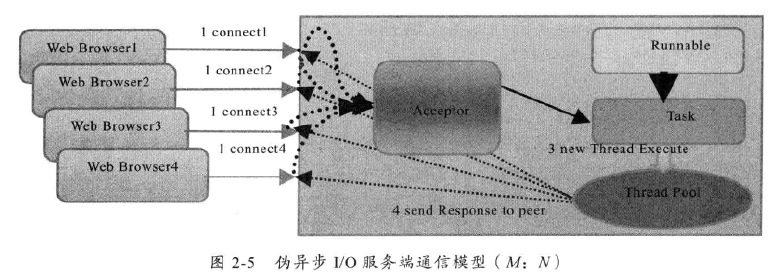
1 | TimeServerHandlerExcutePool singleExecutor = new TimeServerHandlerExecutePool(50, 10000); |
当对 Socket 的输入流进行读取的操作的时候，它会一直阻塞下去，直到发生三种事件:
这意味着当对方发送请求或者应答消息比较缓慢，或者网络传输缓慢时，读取输入流的一方的通信线程将被长时间阻塞，如果对方要 60s 才能够将数据发送完成，读取一方的 I/O 线程也将会被同步阻塞 60s，在此期间，其他接入消息只能在消息队列中排队。当调用 OutputStream 的 write 方法时，也面临同样的问题。当消息的接收方处理缓慢的时候，将不能及时地从 TCP 缓冲区中读取数据，这将会导致发送方的 TCP window size 不断减小，直到为 0，双方处于 Keep-Alive 状态，消息发送方将不能再向 TCP 缓冲区写入消息，这时如果采用的是同步阻塞 I/O，write 操作将会被无期限阻塞，直到 TCP window size 大于 0 或者发生 I/O 异常。
1 | public MultiplexerTimeServer(int port) { |
由于 SocketChannel 是异步非阻塞的，它并不保证一次能够把需要发送的字节数组发送完，此时会出现 “写半包” 问题。我们需要注册写操作，不断轮询 Selector 将没有发送完的 ByteBuffer 发送完毕，然后可以通过 ByteBuffer 的 hasRemain() 方法判断消息是否发送完成。
相比于 BIO，NIO 的一个明显的好处是不需要为每一个 Socket 分配一个线程，而可以在一个线程中处理多个 Socket 套接字相关的工作。
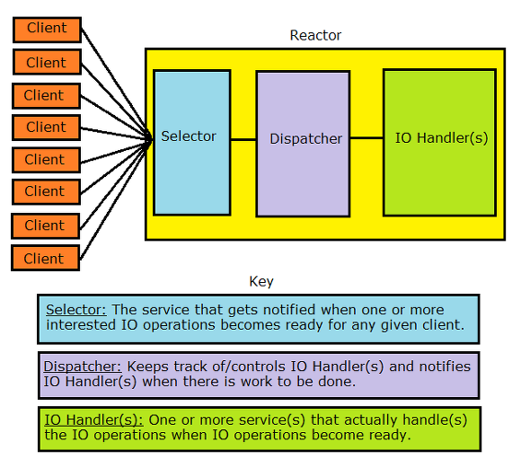
通过 Channel 对象获取的 I/O 数据首先要经过操作系统的 Socket 缓冲区，再将数据复制到 Buffer 中，这个操作系统缓冲区就是底层的 TCP 所关联的 RecvQ 或者 SendQ 队列，从操作系统缓冲区到用户缓冲区复制数据比较消耗性能，Buffer 还提供了另外一种直接操作系统缓冲区的方式，即 ByteBuffer.allocateDirector(size)，这个方法返回的 DirectByteBuffer 就是与底层存储空间关联的缓冲区，它通过 Native 代码操作非 JVM 堆的内存空间。每次创建或者释放的时候都会调用一次 System.gc()。一般在数据量比较大、生命周期比较长的情况下比较合适。
FileChannel.transferXXX 与传统的访问文件方式相比可以减少数据从内核到用户空间的复制，数据直接在内核空间中移动:
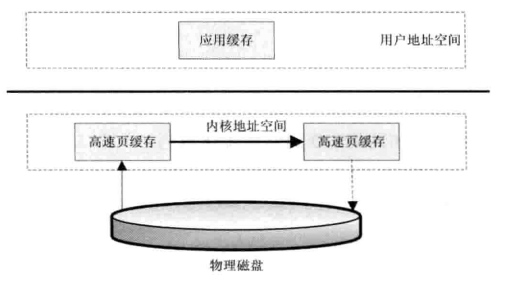
FileChannel.map 将文件按照一定大小块映射为内存区域，当程序访问这个内存区域时，将直接操作这个文件数据，这种方式省去了数据从内核空间向用户空间复制的损耗。这种方式适合对大文件的只读性操作，如大文件的 MD5 校验。
1 | public class AsyncTimeServerHandler implements Runnable { |
性能检测: 通过压力测试，看系统 I/O wait 指标是否异常。例如，测试机器有 4 个 CPU，那么理想的 I/O wait 参数不应该超过 25%，如果超过，则 I/O 很可能成为应用程序的性能瓶颈。在 Linux 下通过 iostat 命令查看。通常我们还会查看另外一个参数，就是 IOPS，即要查看应用程序需要的最低的 IOPS 是多少，磁盘的 IOPS 能不能达到要求。
1 | (磁盘数 * 每块磁盘的 IOPS) / (磁盘块的吞吐量 + RAID 因子 * 磁盘写的吞吐量) = IOPS |
TCP 连接查看主机可以使用的端口范围:
1 | cat /proc/sys/net/ipv4/ip_local_port_range |
可用端口数量: 60999 - 32768 = 28231，如果这个值偏小，则遇到大量并发请求时就会成为性能瓶颈。
| 网络调优参数 | 说明 |
|---|---|
echo "1024 65535" > /proc/sys/net/ipv4/ip_local_port_range |
设置端口可用范围 |
echo 1 > /proc/sys/net/ipv4/tcp_tw_reuse |
设置 time_wait 连接重用 |
echo 1 > /proc/sys/net/ipv4/tcp_tw_recycle |
设置快速回收 time_wait 连接 |
echo 180000 > /proc/sys/net/ipv4/tcp_max_tw_buckets |
设置最大 time_wait 连接长度 |
echo 0 > /proc/sys/net/ipv4/tcp_timestamps |
表示是否启用以一种比超时重发更精确的方法来启用对 RTT 的计算 |
echo 1 > /proc/sys/net/ipv4/tcp_window_scaling |
设置 TCP/IP 会话的滑动窗口大小是否可变 |
echo 20000 > /proc/sys/net/ipv4/tcp_max_syn_backlog |
设置最大等待处于客户端还没有应答回来的连接数 |
echo 10000 > /proc/sys/net/core/somaxconn |
设置每一个处于监听状态的端口的监听队列的长度 |
echo 10000 > /proc/sys/net/core/netdev_max_backlog |
设置最大等待 CPU 处理的包的数目 |
echo 2000000 > /proc/sys/fs/file-max |
设置最大打开的文件数 |
| … | … |
以上设置都是临时性的，系统重新启动后就会丢失。
BufferedOutputStream 经常被用在避免频繁操作磁盘和网络的地方(参考):
1 | BufferedOutputStream bos = new BufferedOutputStream(zip); |
ByteArrayOutputStream 只是在内存里面做一层缓冲:
1 | ByteArrayOutputStream baos = new ByteArrayOutputStream(); |